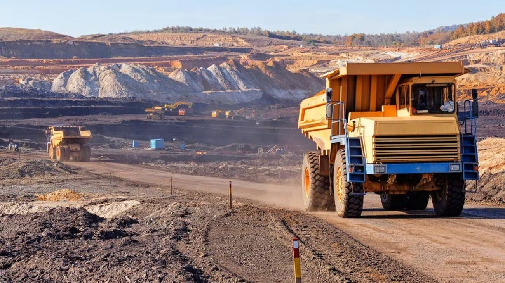

La minería argentina alcanzó un récord histórico de exportaciones en 2025
La minería argentina alcanzó en 2025 un récord histórico de exportaciones, superando los USD 5.400 millones antes de finalizar el año.

Entre enero y noviembre, las ventas al exterior mostraron un crecimiento interanual superior al 30%, impulsadas principalmente por los minerales metalíferos. Este desempeño permitió que el sector supere ampliamente los niveles alcanzados en años anteriores, incluso sin contabilizar el mes de diciembre.
Entre enero y noviembre, las ventas al exterior mostraron un crecimiento interanual superior al 30%, impulsadas principalmente por los minerales metalíferos. Este desempeño permitió que el sector supere ampliamente los niveles alcanzados en años anteriores, incluso sin contabilizar el mes de diciembre.
El oro fue el principal producto exportado, con una participación destacada dentro del total, seguido por otros minerales estratégicos que mantienen una fuerte demanda en los mercados internacionales. La diversificación de destinos también contribuyó al buen resultado, con envíos relevantes hacia países de América del Norte, Europa y Asia.
Además del aumento en las exportaciones, la minería registró un saldo comercial positivo, ya que las ventas externas superaron ampliamente a las importaciones de insumos y equipamiento.
Este superávit refuerza el aporte neto del sector al ingreso de dólares.
Con estos números, la minería se posiciona como un pilar clave para el crecimiento económico y la estabilidad externa, en un contexto donde el ingreso de divisas resulta fundamental para la macroeconomía argentina.